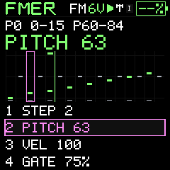
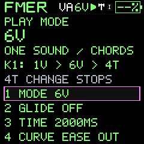

Patterns and performance
Four-track recording and patterns
Sixteen shared patterns, up to 64 steps each, with one instrument per mono track.
The pattern pool is 16 patterns total, shared by four tracks. Each pattern contains up to 64 steps with pitch, velocity and gate. Rest is stored as 128 and Tie as 129; playable MIDI notes are 0–127. A tie extends an earlier note rather than making a new attack. Reducing a pattern's visible length retains its hidden steps for later expansion.
Each track chooses a saved instrument reference and a pattern, with independent level, mute, solo and FX routing. Pattern changes queue independently at that track's pattern boundary. Chains select a cyclic sequence of patterns. The separate SONG page adds four independent arrangement lanes with per-entry repeats and transposition. See Song mode.
RECORD offers Step, Overdub and Replace (stored 0, 1 and 2). Step entry writes deliberate events. Timed Overdub preserves existing events where you do not play. Replace records a new pass in place of the prior events. The four-beat count-in silences playback and starts all tracks together on the downbeat, aligning the recording pass. REC ends recording while allowing playback to continue; PLAY/STOP stops transport.
Record a small arrangement
- Save kick, snare, bass and lead sounds to known slots.
- Assign one to each track and choose four distinct patterns.
- Set tempo and pattern lengths before recording.
- Select the first track, choose timed Overdub, then press REC and wait through the count-in.
- Record the part; end recording and repeat for the other tracks.
- Use PERFORM to balance levels, mute and queue patterns.
- Save a project so the pattern pool, assignments and mix can be recalled.
Step/pattern numbers are displayed in context; native pattern references are zero-based 0–15. An external clock master must send the expected clock and transport events when the unit is waiting for it.
Performance navigation
Hold HOME and press SEQ to open MIXER in four-track mode. ALGORITHM or SELECT cycles Patch, Pattern, Run, Volume, Mute, Solo, FX. Each of the four knobs belongs to its corresponding track. Transport uses a white solid triangle/square for current play/stop; pending launch/retrigger blinks pink. Hold SEL and tap PLAY for the selected track to restart at the next bar; double-tap PLAY while holding SEL queues all four.
Single-instrument playback
In SINGLE mode, PLAY runs one mono pattern lane through your current instrument. Pattern queues, chains and Song lane 1 are available. Remaining voices can play live keys or an arp alongside the pattern. With glide enabled there is only one total voice, so simultaneous parts compete for it. Browsing SEQ pages never changes mode. Choose the mode explicitly on SEQ → MODE, GLO → VOICE, or with a documented shortcut.
Get to the right sequencer page
Press SEQ from another section to land on MIXER in4T or the single-lane SONG in1V/6V. Hold SEQ for0.8 seconds to return there from any sequencer page. Repeated taps follow MIXER (4T only), SONG, PATTERNS, STEP EDIT, NOTE EDIT, COPY/EDIT, RECORD, CHAIN and PLAY MODE. Where SELECT navigates pages, turn backward to reverse this order; SONG keeps SELECT for entry selection and MIXER keeps it for layers. Merely browsing pages never switches playing mode. Hold HOME then press SEQ for the explicit four-track mixer shortcut.




